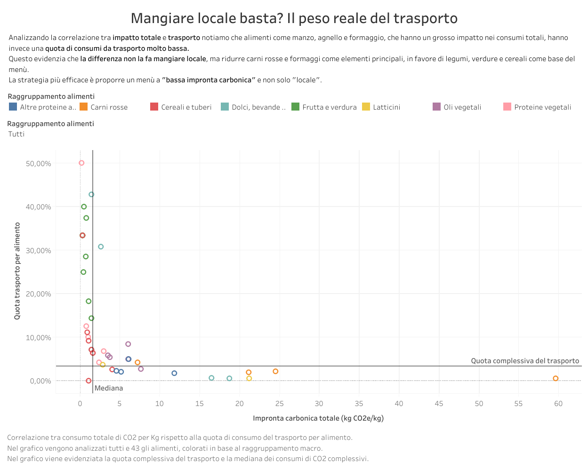
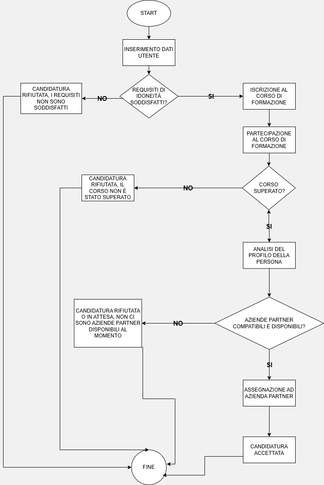
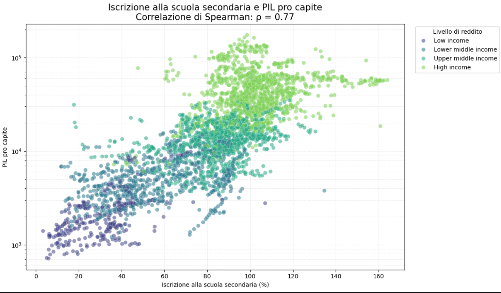

Controllo di gestione
- Analisi degli scostamenti
- Forecast e budgeting
- Monitoraggio dei KPI
- Insight strategici per il business
Il mio obiettivo è trasformare i dati e le informazioni in analisi utili per supportare decisioni aziendali più consapevoli.
I dati riescono a trasmettere tutto quello che sta accadendo, il mio obiettivo è farglielo dire nella maniera più semplice possibile.
Sono un Business Controller con esperienza nell’analisi dei dati, nel monitoraggio delle performance aziendali e nella creazione di report a supporto delle decisioni.
Mi interessa approfondire il legame tra controllo di gestione, analisi dati, automazione e intelligenza artificiale.
A tal proposito oltre a seguire articoli, news, podcast e blog ho deciso di iniziare un Master universitario per apprendere nuove skills come lo sviluppo in Python, la
creazione di modelli predittivi tramite machine learning e la creazione di agenti AI.
Il mio obiettivo è quello di acquisire nuove competenze e skills che permettano di analizzare meglio i numeri e intervenire tempestivamente dove ci sono problemi.
Alcune tappe che raccontano la mia crescita tra formazione,
lavoro e nuove tecnologie.
Università degli Studi di Milano-Bicocca.
Inizio della mia esperienza come Treasury Specialist in Mediaworld.
Inizio del mio percorso nel controllo di gestione, tuttora in corso.
Un percorso dedicato all’intelligenza artificiale applicata ai processi aziendali, per imparare un metodo migliore di analisi e gestione dei dati.
Alcuni progetti realizzati durante il mio percorso formativo e professionale.

Analisi dell’impronta carbonica di 43 alimenti e creazione di dashboard per supportare la progettazione di un menù a minore impatto ambientale.
Strumenti e competenze: Tableau e analisi dati.
Scopri il progetto
Progettazione di un sito dedicato alla formazione professionale e all’inclusione lavorativa di persone in condizioni di svantaggio.
Strumenti e competenze: Logica algoritmica, diagramma di flusso, tabella di verità, pseudocodice e casi di test.
Scopri il progetto
Analisi di dati Paese-anno dal 1998 al 2023 per esplorare le relazioni tra investimenti nell’istruzione, risultati scolastici e condizioni economiche e sociali.
Strumenti e competenze: Python, Pandas, API World Bank, Matplotlib, Seaborn e Plotly.
Scopri il progetto
Percorso dedicato all’utilizzo dell’intelligenza artificiale, dell’analisi dati e degli strumenti digitali all’interno dei processi aziendali, con formazione pratica su HTML, CSS, Python, Tableau e strumenti di business intelligence.
2014-2018
Laurea Triennale in Economia delle Banche e degli Intermediari Finanziari.
Università degli Studi Milano-Bicocca
Sei interessato al mio profilo o vuoi confrontarti con me su dati, tecnologia e innovazione?